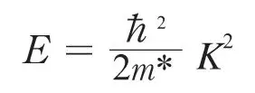
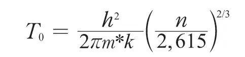
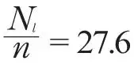
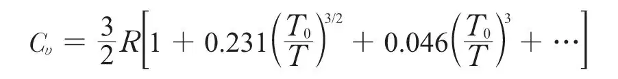
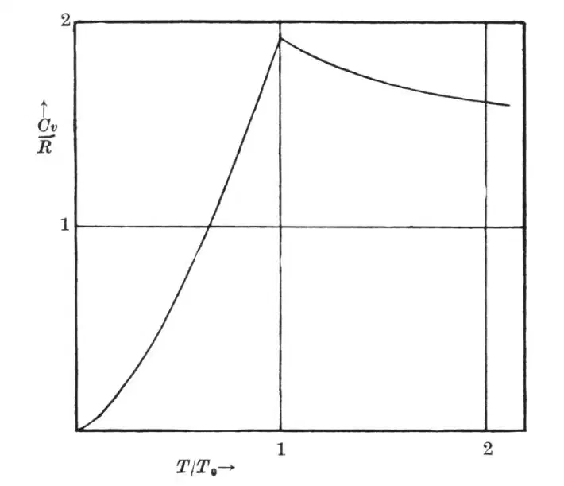

英文
英文伦敦
编者按
1938年初，《自然》刊载了两篇有关液氦超流动性的最早报告，那是俄国的彼得·卡皮查和剑桥的约翰·艾伦与冬·麦色纳各自独立发现的。两篇文章都提到当温度低于2.17 K时液氦的黏度似乎减小至零。有人认为这是由于氦原子排列成为类似金刚石晶体那样的有序结构。而这篇文章中弗里茨·伦敦提出了一个完全不同的看法：这种现象也许与某些具有整数自旋的粒子（“玻色子”）在低温下的量子力学行为有关，玻色和爱因斯坦曾经对玻色子的统计行为进行过描述。 英文
弗勒利希最近的一篇文章中[1]试图将液氦的λ现象解释为在一个具有2n个位置的体心立方晶格中，n个空位和n个氦原子间的有序–无序相变。他认为，可以把一个体心立方晶格看作是由两套具有相对位移的金刚石晶格组合而成的，而且他假定在低于λ点时，氦原子更倾向于处在两套金刚石晶格中某一套的格点上。根据布拉格–威廉姆斯–贝特理论，这种转变被看作是一种二阶相变，非常类似于在β黄铜中发生的相变。琼斯和艾伦最近给《自然》的信[2]中也提到了这一观点。在这两篇文章中，都用到了本文作者确认的事实，即由于液氦占有的分子体积异常大（源于零点运动[3]），所以在所有规则结构的晶格中，金刚石结构具有最低的势能[4]。 英文
在这篇短文中，我首先会说明弗勒利希提出的机制是不成立的，然后再引导大家关注对这种奇异现象的一种完全不同的解释。 英文
（1）按照弗勒利希的观点，当He原子的金刚石晶格部分形成时，对于其他的He原子而言，属于同一套金刚石晶格上的格点应该更有优势，也就是说，金刚石晶格上的结合能应该大于其他点处的结合能。然而，我们很容易看出，按照弗勒利希的观点，在低温下对结合较为不利的那些位点反而具有比其他位点高得多的结合能。晶格中的空位在完全相同的距离（3.08埃）处有4个最近邻，这与金刚石晶格的格点相同，但不同的是它们在距离3.57埃处还有6个次近邻，而且这些次近邻对空位的结合能贡献是很大的（约占势能的50%）。因此，弗勒利希提出的这种合作现象是不会发生的。原子不仅易处于金刚石晶格的格点上，而且更易处于空位上，这意味着对于n个原子来说，我们有2n个位置的体心立方格子，每个位置被占据的概率即使在绝对零度下也仅为1/2。每个原子在距离3.08埃处平均有4个最近邻，这与金刚石晶格结构相同，但除此之外，每个原子在距离3.57埃处平均还有3个次近邻。而在金刚石晶格中有12个次近邻，但距离是5.04埃，几乎没有范德瓦尔斯场。顺便提一下，对于2n个位置，n个原子的面心立方晶格（在距离3.17埃处平均有6个最近邻），其能量略低于刚才讨论过的配位数为4的结构。 英文
在本文中我们不可能给出完整的数值计算过程；但是，通过对这种能量的讨论可以阐明，液体He II任何规则结构的静态空间分布模型肯定都是不可能的。这点在计算He巨大的零点振幅时就已被提出[4]。然而，确定最近邻和次近邻的最佳配位数却有着清楚的物理意义，其可以看作是粗略的哈特里计算，由此我们可得到自洽场和相对应的处于能量极小值的原子的分布概率。 英文
（2）因此似乎可以构造这样一个模型，其中每个He原子在其他原子形成的自洽周期场中运动。用本征函数来描述原子不同的态，类似于在布洛赫的金属理论中用电子本征函数描述电子态；而且，类似于布洛赫理论，最低态的能量可以粗略地表示为波矢K的二次函数，

其中有效质量m*与原子质量的数量级相当。不过我们现在必须用玻色–爱因斯坦统计代替费米统计。 英文
（3）在一些著名的文章中，爱因斯坦已经讨论了“玻色–爱因斯坦”气体特有的一种凝聚现象；但是，随着时间的推移，人们开始认为玻色–爱因斯坦气体的简并性不过是一种假象。因此可能很多人并不知道这种凝聚现象实际上表现为比热的导数的不连续（三阶相变）。在附图中，理想玻色–爱因斯坦气体的比热（Cυ）可表示为T/T0的函数，

式中取m* = He的原子质量，摩尔体积

立方厘米，可得T0 = 3.09 K。对于T ≤ T0，所给出的比热为：Cυ = 1.92 R (T/T0)3/2
对于T ≥ T0，比热为：

在转变点T0，熵为1.28R，与T0无关。 英文

理想玻色–爱因斯坦气体的比热变化关系 英文
（4）尽管氦的λ点实际上更类似于一种二阶相变，但还是很容易将其与玻色–爱因斯坦统计的凝聚现象联系起来。λ点处的温度（2.19K）和熵（~0.8R）的实验值似乎支持了这一猜想。另一方面，我们可以很明显地看出，把液氦简化为一种理想气体是一个脱离实际的模型，这个模型在高温时只能给出Cυ = 3/2R，而在低温区，理想的玻色–爱因斯坦气体也必然会给出过大的比热值，因为此模型并没有考虑德拜频率的逐渐“冻结”。 英文
按照我们的构想，可以说液氦的量子态既对应于金属理论中的电子态又对应于晶格的德拜振动态。当然，我们必须要把这个特点涵盖在理论中，才能有望对液氦的性质有定量的了解。 英文
本文提出的构想或许对理解HeII中特别的输运现象有一点启发（巨大的热导率[5]，极小的黏度[6]，以及最近艾伦和琼斯观察到的奇异的喷泉现象[2]）。 英文
有关这些问题的详细讨论将发表在《物理学杂志》上。 英文
（沈乃澂 翻译；于渌 审稿）